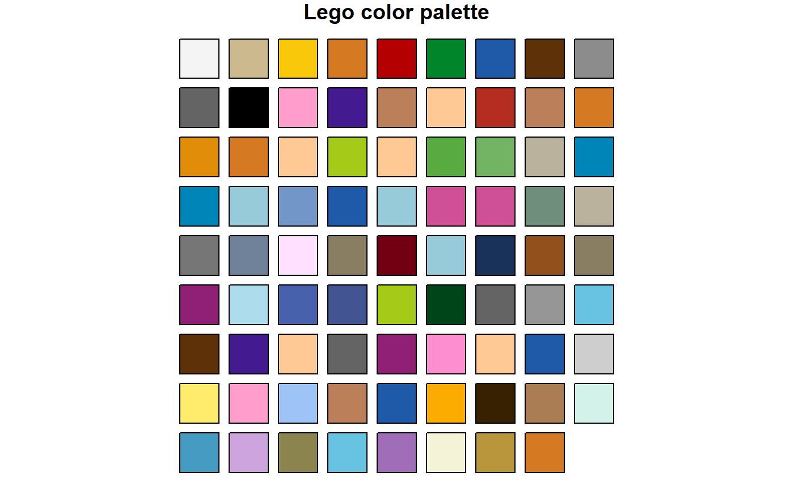
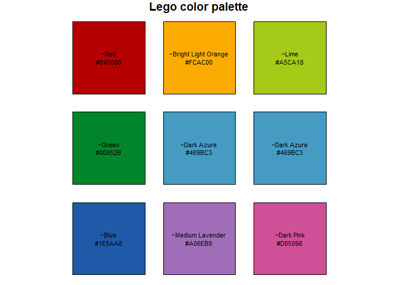

legocolors provides a dataset containing several Lego color naming conventions established by various popular sources. It also provides functions for mapping between these color naming conventions as well as between Lego color names, hex colors, and R color names.
By default, nearest colors are computed based on distance in RGB space when an exact match is not found. This behavior supports the purpose of exchanging arbitrary colors for known Lego colors when the goal is to actually acquire and build something out of Lego parts. This focus is also one of the reasons legocolors uses BrickLink color names as the default naming convention. See ?legocolor for details.
Installation
Install the CRAN release of legocolors with
install.packages("legocolors")Install the development version from GitHub with
# install.packages("remotes")
remotes::install_github("leonawicz/legocolors")Palette conversions
The key helper functions are hex_to_legocolor() and legocolor_to_hex(). hex_to_color() is also provided for general convenience.
library(legocolors)
hex_to_color(c("#ff0000", "#ff0001"))
#> [1] "red" "~red"
hex_to_legocolor("#ff0000")
#> [1] "~Trans-Red"
hex_to_legocolor("#ff0000", material = "solid")
#> [1] "~Red"
legocolor_to_hex("Red")
#> [1] "#B40000"
hex_to_color(legocolor_to_hex("Red"))
#> [1] "~red3"
x <- topo.colors(10)
hex_to_legocolor(x)
#> [1] "~Dark Purple" "~Blue"
#> [3] "~Trans-Dark Blue" "~Medium Azure"
#> [5] "~Bright Green" "~Lime"
#> [7] "~Glitter Trans-Neon Green" "~Trans-Yellow"
#> [9] "~Trans-Neon Green" "~Light Nougat"
hex_to_legocolor(x, material = "solid")
#> [1] "~Dark Purple" "~Blue" "~Dark Azure"
#> [4] "~Medium Azure" "~Bright Green" "~Lime"
#> [7] "~Yellow" "~Yellow" "~Bright Light Yellow"
#> [10] "~Light Nougat"
hex_to_legocolor(x, def = "tlg", material = "solid")
#> [1] "~Medium Lilac" "~Bright Blue"
#> [3] "~Dark Azur" "~Medium Azur"
#> [5] "~Bright Green" "~Bright Yellowish Green"
#> [7] "~Bright Yellow" "~Bright Yellow"
#> [9] "~Cool Yellow" "~Light Nougat"While different sets of Lego colors are organized by material type, e.g., solid colors, semi-transparent colors, etc., these palettes are not useful for plotting data. The greatest value comes from converting useful color palettes to those comprised of existing Lego colors while still keeping as close to the original palette as possible.
Palette preview
The view_legopal function can be used to quickly see a Lego color palette. It can plot a named material palette, but like the functions above, it can also display a converted palette if given an arbitrary vector of hex color values.
view_legopal("solid")
r <- rainbow(9)
r
#> [1] "#FF0000" "#FFAA00" "#AAFF00" "#00FF00" "#00FFAA" "#00AAFF" "#0000FF"
#> [8] "#AA00FF" "#FF00AA"
view_legopal(r, material = "solid", show_labels = TRUE, label_size = 0.7)
Recommended colors
Dealing with
- Available colors for generic bricks and plates but prohibitively expensive.
- Available colors for generic bricks and plates but with low supply.
- Colors used only for exotic/specialty parts (not available for bricks and plates).
Filtering to a decent set of Lego colors that are relatively easy to acquire online at BrickLink.com for simple brick and/or plate parts, and relatively affordable, is largely the responsibility of the user. There is a recommended column in the legoCols dataset. However, a human-derived recommendation column would be better (feel free to submit a PR if you’d like to improve the package).
In the previous version of legocolors, brick- and plate- specific data, excluding more exotic parts, was scraped from the website catalog, but this has become too difficult to do reliably. For now, you will have to use your personal Lego knowledge to filter out irrelevant or problematic colors from the complete official set. This is worth considering because even though BrickLink consistently offers the widest selection and greatest quantity at the lowest price, supply and demand leads to some parts in some colors being prohibitively expensive to acquire in quantity. When determining what colors you wish to use to build a physical model, you will save an incredible amount of money if you can accept limiting your palette to the most common Lego colors.
Citation
Matthew Leonawicz (2024). legocolors: Official Lego Color Palettes. R package version 0.4.0. https://CRAN.R-project.org/package=legocolors
Contribute
Contributions are welcome. Contribute through GitHub via pull request. Please create an issue first if it is regarding any substantive feature add or change.
Please note that the legocolors project is released with a Contributor Code of Conduct. By contributing to this project, you agree to abide by its terms.